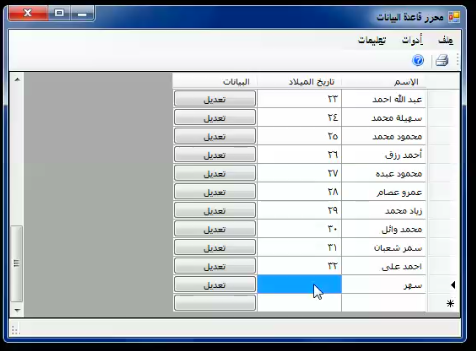
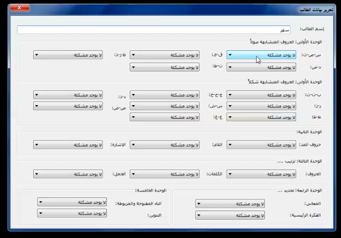
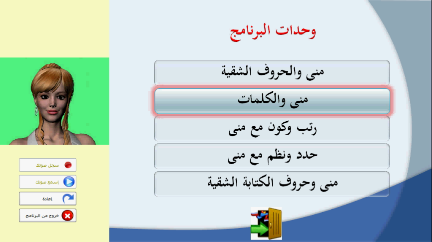
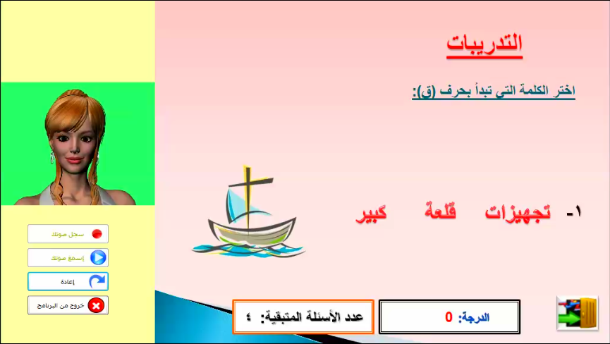
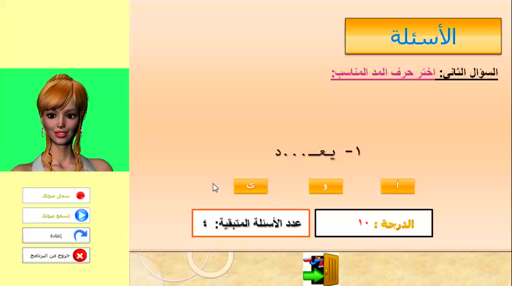

Mostafa Abdelaziz
525 Bloor St. East,
Toronto, ON M4W 1J1
+1 (778) 788-0657
iocoder@aol.com
Jul 14th, 2012
Educational program based on animated pedagogical agent
"The effectiveness of a computer program based on animated
pedagogical agent in the remedy of reading and writing difficulties
of children with learning disabilities in primary stage" is
a PhD thesis by Dr. Maha Badr at Damanhour University,
Faculty of Education, Curriculum and Methodology Department.
In this research, Dr. Maha shows how such computer program is
really effective in treating the learning difficulties of
pupils. As part of the study, a computer program with those
specification was to be built and
tested on a sample of children.
My mission was to design and implement
this program (in Arabic) which was based on an
interactive pedagogical agent which was called "Mona".
The graphical animations were designed
by a grapics designer and the voices were recorded in a special
studio. I did all the programming needed to make the agent a
typical interactive computer
teacher and to make the education content interactive.
Dr. Maha designed
the content in her thesis and we implemented it together. It was
an interesting task as I learnt a lot about scientific research
and how computer science could help other sciences.
Objective
The program tends to treat the following difficulties:
Difficulties of distinguishing between letters:
distinguishing between letters with the same voice.
distinguishing between letters with the same shape.
The interactive agent (Mona) which helps the student during their
trip through the program.
A database with the data of the users and their difficulties.


The program selects a study plan for every student based
on the information stored in the databased.

The program included a lot of interactive excercises to
help the pupils with their difficulties.


Exploratory experiment
In 2010/2011, the researcher did an exploratory experiment on the
program by
applying it on 12 children with learning difficulties. The sample
was chosen from Ibn Sina School, Alexandria. The researcher found
that:
Students faced problems in understanding the instructions of Mona in
the chapter of "demonstratives", so we added more demonstration.
Students faced problems in reading some sentences in
"Re-arrange and form with Mona" because font was small. So we
modified the size of the font.
Students faced some technical problems in the program and we worked on
solving it.
Procedures of the fundamental research experiment
Objective:
To find the effectiveness of the proposed computer program in
the remedy of learning difficulties of a sample of 4th stage students.
Sample:
In 2011, Dr. Maha chose 80 students from two schools in Alexandria:
Glal Desouky School and Mansour Hussien School. The students
were split into three groups:
Experimental Group A: 25 students.
Experimantal Group B: 25 students.
Standard Group: 30 students.
This was decided based on a lot of research procedures that the
researcher did on 236 students at the mentioned shools. After
diagnostic tests, it was shown that the selected students had
difficulties in Arabic.
Implementation:
The researcher first applied a set of tests to find the characteristics
of students.
Information of students and their difficulties was inserted in the
database.
The program was installed on the computers in the computer labs of the
mentioned schools. The labs were prepared for the experiment, thanks
to the teachers of both schools who really helped the
researcher so much.
For group A, the program was configured to show the agent.
For group B, the program was configured to hide the agent.
Dr. Maha started to teach the students of
both groups how to use the program.
The experiment took two months. The students finished all the
study plans that were set by the program.
During the experiment, the researcher noted that the students
really interacted with the program and they had desired to
continue learning with the program. The agent largely affected
the interaction between group A and the program.
The researcher then applied the diagnostic tests on both groups,
the tests showed different results than the tests that were performed
on the students before they used the program.
Research results
Using a set of statistical methods like
Scheffe`'s method and
ANCOVA, the researcher got to the following
conclusions:
The proposed program which is based on the pedagogical agent
is
highly effective
in treating the reading and writing difficulties
of the fourth grade students with learning disabilities.
The appearance of the persona of the animated pedagogical agent
on the interface of the program adds social dimension to the
instructional situation and helps in the remedy of learning
difficulties of children and improves their performance
better than non-appearance of its persona.
The effectiveness of the proposed program isn't limited to the total
score of the diagnostic test, but it
spreads to the different dimensions
of the test; which included the reading and writing difficulties
(letter discrimination - word discrimination - comprehension - writing).
The close results between the first and fourth dimensions indicate the
positive impact by the appearance of the persona of the animated
padagogical agent on the interface of the program on the performance
of students.